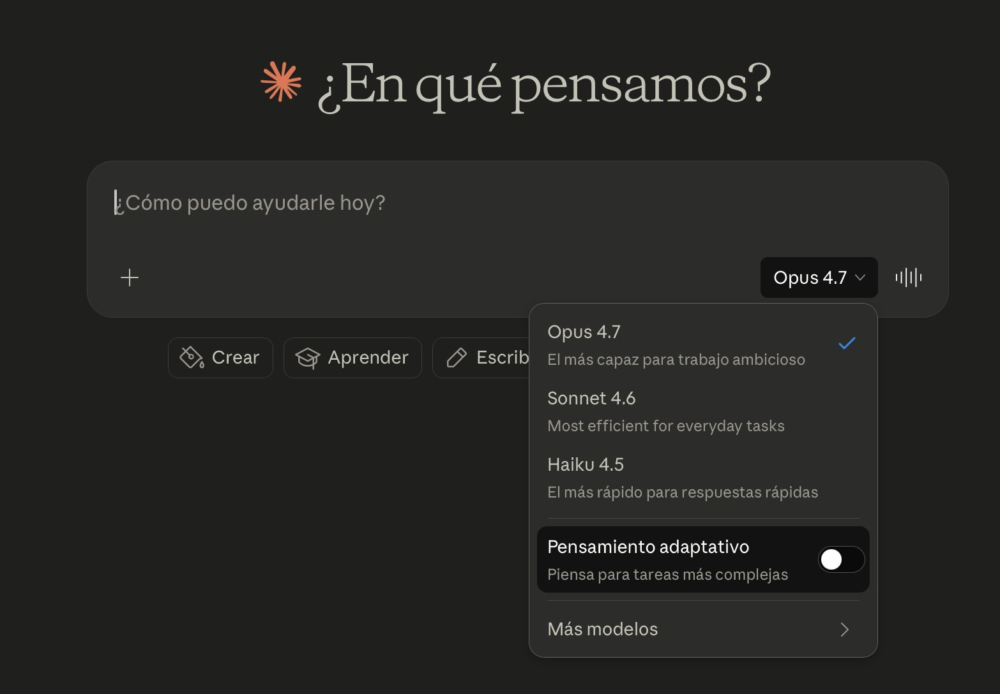
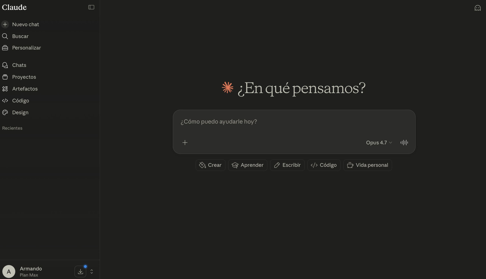
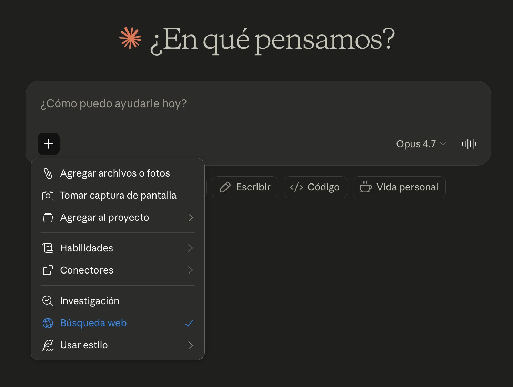
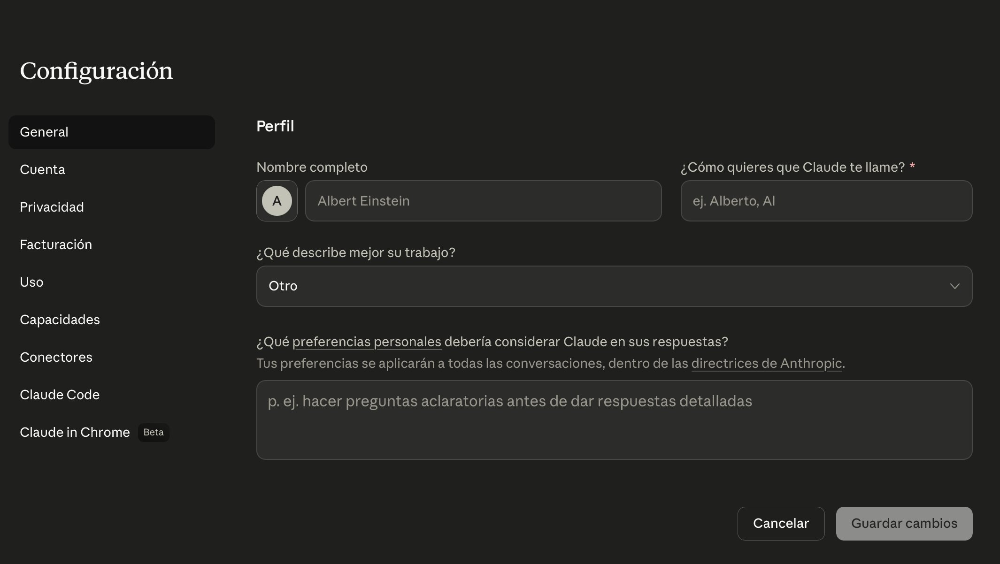
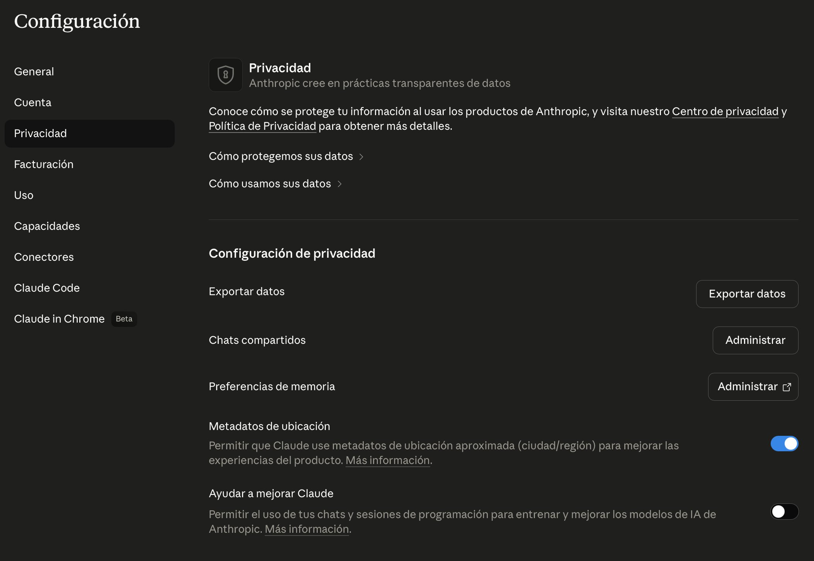
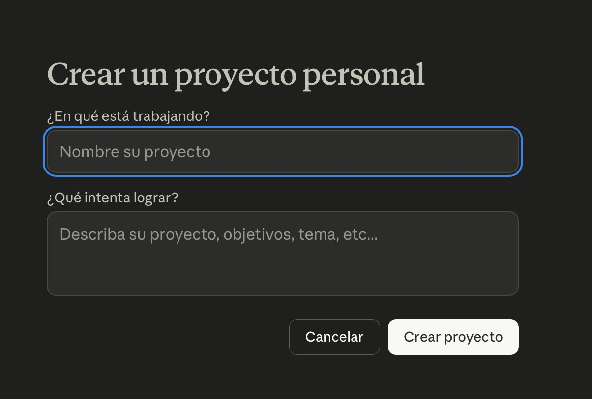
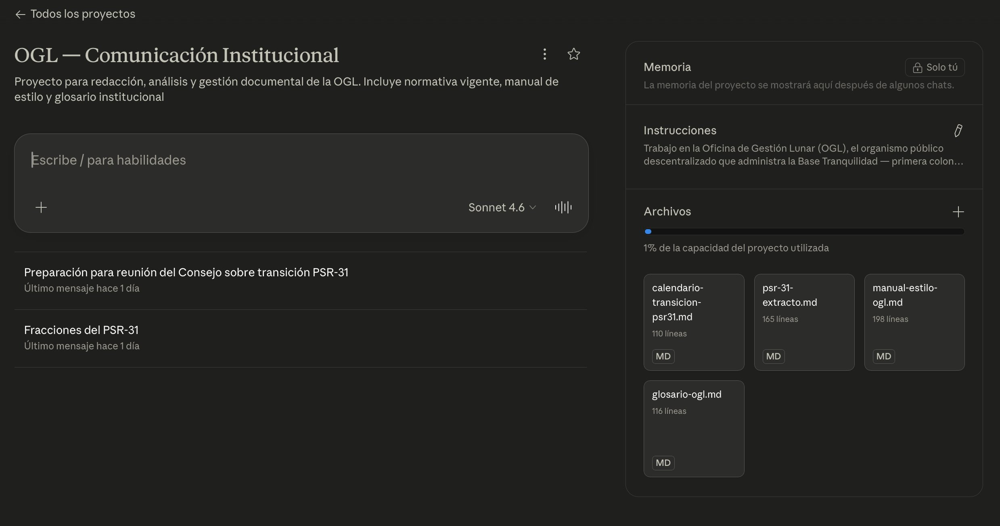
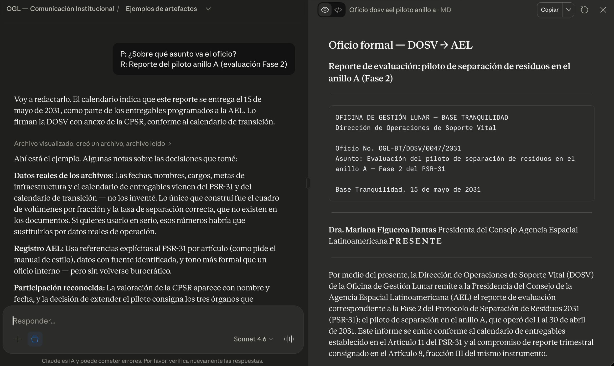
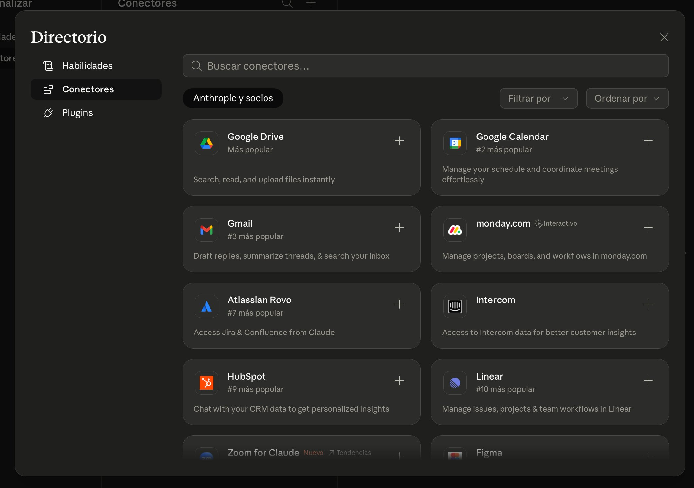
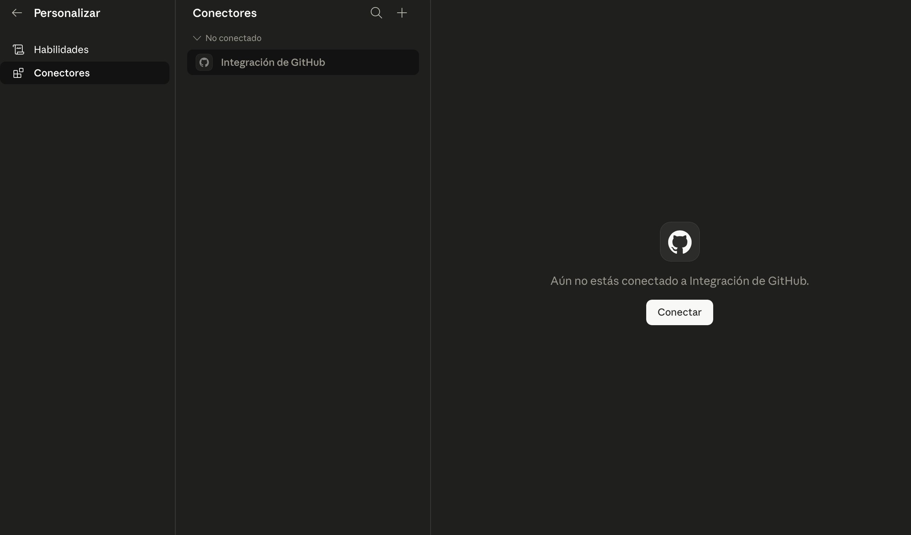

Claude es un modelo de lenguaje desarrollado por Anthropic, una empresa fundada en 2021 con sede en San Francisco. La compañía surgió de un grupo de personas que trabajaban en OpenAI y decidieron crear una empresa con énfasis en seguridad, alineación y usabilidad de los modelos.
No hace falta saber más que eso para usar la herramienta. Si te interesa la historia y la visión de la empresa, la información está disponible en anthropic.com.
La familia de modelos
Claude no es un solo modelo, es una familia. En 2026 hay tres tamaños, cada uno con un perfil distinto:
Haiku. El más rápido y económico. Ideal para tareas sencillas y de alto volumen: extracciones simples, clasificación, respuestas breves.
Sonnet. El modelo de uso diario. Equilibra capacidad y velocidad. Sirve para la mayoría de las tareas normales: redacción, análisis, síntesis, conversación sostenida.
Opus. El más capaz. Razona mejor con problemas complejos, instrucciones largas, tareas con muchos pasos. Es más lento y cuesta más.
Cada tamaño se actualiza con el tiempo (Opus 4.5, Opus 4.6, Opus 4.7; Sonnet 4.5, 4.6; y así). Los números cambian, la lógica de los tamaños se mantiene: Haiku rápido, Sonnet equilibrado, Opus potente.

Selector de modelo con las tres opciones y el toggle de pensamiento adaptativo
El selector de modelo está en la caja de entrada. Desde ahí también se activa Pensamiento adaptativo: el modelo invierte más tiempo razonando antes de responder, útil en problemas que requieren varios pasos o mucho cuidado. Gasta más cupo de mensajes que una respuesta normal.
Los planes
Claude se ofrece en varios planes. Los principales son Free, Pro, Team y Enterprise.
Free (sin costo)
Pensado para que pruebes la herramienta. Incluye:
Acceso a Sonnet en web, móvil y escritorio.
Cupo de mensajes limitado. Funciona con una ventana deslizante de 5 horas, no por día calendario: del orden de 15 a 40 mensajes cada 5 horas según demanda del sistema, longitud de las conversaciones y archivos adjuntos.
Acceso a Proyectos y Artefactos (desde principios de 2026 son gratuitos).
Memoria básica.
Búsqueda web.
Conectores básicos.
No incluye:
Acceso a Opus.
Investigación profunda (Research).
Conectores avanzados ni custom.
Claude Code ni Claude Cowork.
Suficiente para conocer la herramienta. Insuficiente para trabajar con ella a diario.
Pro ($17 USD/mes anual, $20 USD/mes mensual)
El plan estándar para uso individual intensivo. Amplía respecto a Free:
Cupo de uso aproximadamente 5 veces mayor que Free (del orden de 45 mensajes cada 5 horas, variable por demanda; hay un tope semanal adicional que los usuarios típicos no alcanzan).
Acceso a Opus.
Proyectos sin límite de cantidad.
Research (investigación profunda).
Estilos personalizados.
Conectores (integraciones con Gmail, Slack, Google Drive, Notion y otros).
Acceso a Claude Code y Claude Cowork.
Funcionalidades beta de generación de Excel y PowerPoint.
Es el plan que la mayoría de usuarios individuales que trabajan con Claude a diario van a necesitar.
Team ($20 USD/usuario/mes anual, $25 USD/usuario/mes mensual — asiento Standard)
Pensado para equipos y organizaciones entre 5 y 150 personas. Lo clave:
Todo lo de Pro para cada usuario.
Administración centralizada: un administrador gestiona usuarios, accesos, facturación y políticas.
Facturación única a nombre de la organización (no reembolsos individuales).
SSO y verificación de dominio.
Búsqueda empresarial entre los conectores habilitados.
Controles de administrador sobre integraciones y acceso.
Por defecto, Anthropic no usa el contenido de Team para entrenar modelos (ver capítulo 9).
Team también ofrece un asiento Premium a $100 USD/mes (anual) o $125/mes (mensual) con cupos de uso más altos para usuarios intensivos dentro de la organización.
Para una agencia de gobierno, una OSC o una consultora pequeña, Team suele ser la opción razonable. Deja de ser cada persona con su cuenta personal y se convierte en una herramienta institucional con reglas claras de uso de datos.
Enterprise
Para organizaciones con necesidades más sofisticadas. Agrega sobre Team:
Control de acceso basado en roles (RBAC).
SCIM para gestión de usuarios automatizada.
Logs de auditoría.
API de cumplimiento.
Retención de datos personalizada.
Listas blancas de IPs.
Opción compatible con HIPAA.
Algunos modelos con ventana de contexto de 500,000 tokens (en el resto de planes, 200,000).
El precio es por asiento ($20 USD) más consumo a tarifas de API, con contrato a medida.
Max (desde $100 USD/mes)
Para usuarios individuales con uso muy intensivo. Amplía los cupos de Pro. Hay una versión "5x" (cinco veces los cupos de Pro) y una "20x" (veinte veces). Relevante si tu carga diaria de trabajo con Claude es alta; para la mayoría, Pro es suficiente.
Una aclaración importante sobre el contexto
La ventana de contexto —cuánto texto puede procesar Claude en una sola conversación, ver capítulo 3— es de 200,000 tokens en todos los planes pagados (Pro, Max, Team y Enterprise en los modelos estándar). Solo Enterprise ofrece, en modelos específicos, una ventana ampliada de 500,000 tokens. Es decir, pagar más no te da automáticamente más contexto; te da más cupo (mensajes por ventana de tiempo), funcionalidades adicionales y, en Team/Enterprise, garantías de datos.
Qué plan elegir
Tres criterios simples:
Si vas a probar la herramienta unos días sin compromiso: Free.
Si la vas a usar como parte de tu trabajo diario, pero tu organización no tiene cuenta: Pro.
Si tu organización quiere adoptarla formalmente: Team. La diferencia principal respecto a tener a todos con cuenta Pro personal es doble: administración centralizada y, más importante, las conversaciones de Team no se usan para entrenamiento por política de Anthropic. Para cualquier organización que trabaje con información institucional, esta distinción no es menor.
Capítulo
02
La interfaz
Claude web vive en claude.ai. También hay aplicación de escritorio para macOS y Windows y apps móviles para iOS y Android. Esta guía describe la interfaz web; las otras son variaciones con el mismo esqueleto.
Las capturas de esta guía son de abril de 2026. Anthropic rediseña la interfaz con frecuencia, así que los iconos y la posición exacta de algunos botones pueden cambiar. Lo que describimos es la estructura funcional, que cambia menos.
El esqueleto de la pantalla

Esqueleto de la interfaz de Claude
Al abrir claude.ai y entrar a una conversación, vas a ver tres zonas:
Barra lateral (izquierda). Es el índice de tu historial. Aparecen las conversaciones recientes, el acceso a tus proyectos, artefactos guardados, y el atajo a "Personalizar" (donde viven habilidades y conectores). Desde abajo entras a la configuración de tu cuenta. En pantallas pequeñas la barra lateral se esconde; se abre con el icono de menú.
Área central. El cuerpo de la conversación. Los mensajes tuyos aparecen a la derecha, las respuestas de Claude a la izquierda. Si la conversación activa un artefacto (ver capítulo 5), el área central se divide en dos: conversación a la izquierda, artefacto a la derecha.
Caja de entrada (abajo). Donde escribes. Tiene, junto al campo de texto:
El botón + que despliega un menú con adjuntar archivos, capturas de pantalla, agregar al proyecto, Habilidades, Conectores, Investigación, Búsqueda web y Usar estilo.
El selector de modelo (Sonnet, Opus, Haiku), cuando tu plan te da a elegir. Desde ahí también se activa Pensamiento adaptativo (ver capítulo 1).
El botón de dictado por voz.
El botón de enviar.

Menú desplegable del botón +
Cuando pegas texto muy largo, la caja puede convertirlo en un "adjunto de texto" en vez de mandarlo como mensaje inline. Es útil, no ensucia la conversación y Claude lo procesa igual.
Cómo empezar una conversación
Hay dos rutas.
Nueva conversación suelta. Click en "Nuevo chat" (arriba de la barra lateral). Sirve para preguntas puntuales, pruebas rápidas, tareas únicas.
Nueva conversación dentro de un proyecto. Click en el proyecto desde la barra lateral, luego "Nuevo chat" ahí. Esta conversación arranca con todo el contexto del proyecto cargado: instrucciones personalizadas, archivos en el "conocimiento del proyecto", y lo que haya en la memoria del proyecto. Ver capítulo 5.
Historial y búsqueda
Todas tus conversaciones quedan guardadas en la barra lateral. Puedes:
Volver a una conversación haciendo click en ella. Sigues donde la dejaste, con todo el contexto.
Renombrar una conversación para que sea más fácil de ubicar después.
Archivar o eliminar conversaciones que ya no necesites.
Buscar por palabras clave dentro de tu historial.
Si usaste memoria (capítulo 5), Claude puede referenciar cosas dichas en conversaciones previas sin que tengas que recordar en cuál fue.
Modos de salida e interacción
Además de texto normal en la conversación, Claude puede producir o permitir:
Archivos descargables — textos, PDFs, hojas de cálculo, presentaciones generadas como archivo.
Código ejecutable — Claude corre código dentro de la conversación y devuelve el resultado (cálculos, procesamiento de datos).
Investigación (capítulo 5.4) — modo largo que busca en internet y produce un reporte con fuentes.
Cuál de estos usa depende de lo que le pidas y, en algunos casos, de funcionalidades que enciendes explícitamente.
Configuración que conviene conocer
En la configuración de tu cuenta (icono de tu perfil, abajo a la izquierda), hay secciones que conviene revisar al menos una vez:
General. Ahí está tu perfil y las instrucciones personalizadas globales, que se aplican a todas tus conversaciones. Las de proyecto suelen sumar, no reemplazar. Ver capítulo 5.2.

Configuración → General
Privacidad. Control sobre si Anthropic puede usar tus conversaciones para entrenar modelos futuros, metadatos de ubicación, exportación de datos y gestión de chats compartidos. Ver capítulo 9.

Configuración → Privacidad
Capacidades. Aquí se encienden y apagan funcionalidades experimentales y betas. Vale la pena revisar qué tienes encendido.
Personalizar. Sección aparte (no dentro de Configuración) a la que se llega desde la barra lateral. Agrupa Habilidades y Conectores. Los conectores también se pueden activar desde el botón + de la caja de entrada (ver arriba). Ver capítulos 5.7 y 5.8.
La versión móvil
Las apps de iOS y Android siguen la misma lógica con pantallas compactadas. Puedes dictar por voz (útil para borradores rápidos) y adjuntar archivos desde el sistema.
Limitaciones prácticas: en móvil es incómodo trabajar con artefactos grandes, revisar documentos largos o hacer research. Sirve para consultas, borradores cortos y continuar conversaciones que empezaste en computadora.
Capítulo
03
Cómo funciona una conversación
Esta es la sección más importante para entender por qué Claude a veces funciona muy bien y a veces empieza a perder el hilo.
Qué es realmente un mensaje
Cuando escribes algo en Claude y presionas enter, no estás hablando con una entidad que te recuerda desde la última vez. Lo que ocurre es distinto. Claude recibe todo el texto de la conversación hasta ese momento y, a partir de eso, genera una respuesta.
Esto tiene tres consecuencias que conviene tener presentes:
La primera es que cada respuesta se produce leyendo la conversación completa desde cero. Claude no "guarda" nada en memoria interna. Si en tu primer mensaje le dijiste que trabajas en gobierno y en el décimo le pides un texto, va a usar esa información porque sigue ahí, escrita en la conversación, no porque la recuerde.
La segunda es que entre conversaciones distintas no hay continuidad. Si abres una conversación nueva mañana, Claude no sabe qué hablaron ayer. Tampoco sabe tu nombre, tu puesto, ni nada de lo anterior, salvo que uses funciones específicas diseñadas para eso (proyectos, instrucciones personalizadas, memoria).
La tercera es que Claude no aprende de ti entre conversaciones. Si le corriges un error hoy, mañana va a cometer el mismo error en una conversación nueva. Lo que puedes hacer es guardar las correcciones importantes en instrucciones personalizadas o en un proyecto, para que formen parte del contexto de futuras conversaciones (ver capítulo 5).
Qué es la ventana de contexto
La ventana de contexto es la cantidad máxima de texto que Claude puede procesar en una sola conversación. Incluye todo: tus mensajes, las respuestas previas de Claude, los documentos que adjuntaste, las instrucciones del proyecto si estás dentro de uno, y las instrucciones personalizadas.
Se mide en tokens, no en palabras. Un token es aproximadamente 3 a 4 caracteres en español. Para fines prácticos, puedes pensar que 1,000 tokens son más o menos 750 palabras, pero lo que importa es entender que hay un límite.
Qué pasa cuando la ventana se llena
Hay dos fenómenos distintos y vale la pena separarlos.
Antes de llegar al límite, la calidad empieza a bajar. Mucho antes de que la conversación esté llena, cuando la ventana lleva mucho contenido, Claude tiene más cosas a las cuales atender y le cuesta distinguir lo importante de lo accesorio. Síntomas típicos:
Repite cosas que ya dijo antes.
Ignora instrucciones que diste al principio.
Contradice algo que él mismo estableció páginas arriba.
Se enreda en tareas que al inicio resolvía bien.
Mezcla información de distintos documentos adjuntos.
El modelo no se "rompe". El contexto se saturó de ruido.
Al llegar al límite, Claude resume y sigue. En claude.ai, cuando una conversación está a punto de alcanzar el tope de la ventana, Claude compacta la conversación: produce un resumen del historial, reemplaza los mensajes anteriores por ese resumen, y continúa a partir de ahí. Vas a ver un aviso tipo "organizando mis pensamientos" mientras lo hace (uno o dos minutos). Tu historial completo sigue visible en la conversación para que tú lo puedas leer, pero el modelo, de ahí en adelante, solo usa el resumen como memoria de lo previo.
Esto te permite seguir escribiendo en la misma conversación. Pero tiene un costo importante: el resumen pierde detalle. Matices que habías trabajado, decisiones finas, términos exactos, ejemplos concretos que Claude había entendido bien, todo eso se comprime. Cada ciclo de compactación pierde un poco más. Una conversación que ha sido compactada dos o tres veces tiende a volverse vaga, generalista, y a olvidar con precisión lo que al principio tenía claro.
Cuándo empezar una conversación nueva
La regla práctica: cuando el tema cambia, empieza una conversación nueva. No por prolijidad, sino porque el contexto viejo contamina el nuevo.
Si llevas una hora pidiéndole a Claude que revise un oficio y ahora quieres analizar un reporte distinto, abre conversación nueva. El contexto del oficio anterior no ayuda y, de hecho, puede perjudicar al análisis del reporte.
Otros momentos para abrir conversación nueva:
Cuando notes que Claude empieza a responder peor que al principio.
Cuando detectes que está repitiendo errores que ya corregiste.
Cuando la conversación se haya desviado tanto que ya no recuerdas por qué empezaste.
Cuando vayas a empezar una tarea distinta, aunque sea con el mismo documento.
No es un problema cerrar muchas conversaciones. Es mejor trabajar en conversaciones cortas y bien enfocadas que en una gigante que lo abarca todo.
Cómo gestionar el contexto con criterio
Pon lo importante al principio. Al inicio de la conversación, establece el contexto: quién eres, para qué es la tarea, qué criterios aplican, qué restricciones hay. Esto lo puedes hacer a mano o, mejor, dentro de un proyecto con instrucciones personalizadas. Ver capítulo 5.
Adjunta solo lo necesario. Si vas a trabajar con un documento de 200 páginas pero solo te interesan los capítulos 3 y 4, extráelos antes de subir. Un documento completo ocupa espacio en la ventana y añade ruido.
Cuando veas degradación, corta. No insistas en seguir en la misma conversación. Resume en un párrafo lo que ya definiste, ábrete una nueva, pega el resumen y continúa. El minuto que inviertes en esto te ahorra media hora peleándote con una conversación cansada.
Un matiz sobre "memoria"
Claude tiene, según el plan, funcionalidades llamadas memoria o personalización que le permiten recordar cosas entre conversaciones. Estas funcionalidades no son memoria en el sentido tradicional sino que funcionan guardando información en un lugar específico que se inyecta automáticamente en el contexto de las nuevas conversaciones. Sigue siendo contexto, solo que no lo escribes tú cada vez. Ver capítulo 5 para los detalles.
Capítulo
04
Adjuntar archivos e imágenes
Claude trabaja bien con documentos. Subir un archivo y pedirle que lo lea suele ser más útil que pegar texto en la conversación, porque conserva estructura, imágenes y formato.
Cómo adjuntar
En la caja de entrada hay un botón de adjuntar (clip o +). Acepta:
Documentos: PDF, Word (.docx), texto plano, Markdown, CSV, Excel (.xlsx), PowerPoint (.pptx).
Imágenes: PNG, JPG, GIF, WebP.
Código: cualquier archivo de texto con extensión reconocida (.py, .js, .html, .md, etc.).
Arrastrar y soltar funciona. También pegar imágenes directamente desde el portapapeles.
Límites actuales
En claude.ai, a abril de 2026:
Tamaño máximo por archivo: 30 MB.
Archivos por conversación: hasta 20.
Imágenes: hasta 8,000 × 8,000 píxeles.
PDFs: análisis visual completo (texto + imágenes + gráficas) hasta aproximadamente 100 páginas. Más allá, Claude prioriza el texto.
Dentro de Proyectos (Pro y superiores), puedes guardar archivos en el "conocimiento del proyecto" con los mismos límites de tamaño, pero sin el tope de 20 por conversación.
Estos números pueden cambiar. Verifica en la documentación oficial si estás cerca del límite.
El tamaño no siempre es lo que cuenta
Un detalle que confunde: un PDF de 5 MB lleno de texto denso puede ocupar más espacio útil en la ventana de contexto (capítulo 3) que un PDF de 20 MB lleno de imágenes. La razón es que Claude convierte cada archivo a tokens, y el texto genera más tokens por megabyte que las imágenes.
PDFs
Los PDFs son el formato que más vas a subir. Algunos matices:
PDFs bien formados (exportados desde Word, Google Docs, etc.): Claude los lee como texto nativo. Funcionan muy bien.
PDFs escaneados (imágenes de documentos físicos): Claude puede leerlos con OCR, pero el resultado depende mucho de la calidad del escaneo. Escaneos con manchas, borrones, texto inclinado o resolución baja van a dar transcripciones con errores. Si el documento importa, verifica lo que Claude extraiga contra el original.
PDFs con tablas densas: funcionan, pero a veces confunde filas y columnas en tablas muy pobladas. Si la tabla contiene datos que vas a usar, pídele a Claude que te la devuelva como tabla de texto y revísala contra el original.
PDFs protegidos con contraseña: no se pueden procesar. Hay que desprotegerlos antes.
PDFs muy largos (más de ~100 páginas): Claude los lee, pero es mejor estrategia subir solo los capítulos o secciones relevantes. Reduces ruido y mejoras calidad de respuesta.
Imágenes
Claude puede ver imágenes: interpretarlas, describirlas, analizarlas, responder preguntas sobre ellas.
Lo que funciona bien:
Diagramas y esquemas con texto claro.
Fotografías para identificar objetos, personas (en términos generales), escenas.
Capturas de pantalla para explicar qué está pasando en una interfaz.
Gráficas razonablemente limpias.
Lo que funciona peor:
Gráficas con muchos datos densos: puede leer mal valores numéricos.
Tablas escaneadas en baja calidad.
Texto manuscrito difícil de leer.
Imágenes muy saturadas de información.
Documentos Word y otros formatos
Word (.docx): funciona bien. Claude lee el texto, respeta los estilos en lo esencial, identifica tablas e imágenes.
Excel (.xlsx) y CSV: los procesa como datos tabulares. Para hojas de cálculo con fórmulas complejas, Claude puede necesitar que le expliques qué columnas contienen qué.
PowerPoint (.pptx): extrae el texto de cada diapositiva. No siempre conserva bien el flujo visual, pero sí el contenido.
Markdown y texto plano: ideales. Son los formatos con los que Claude trabaja más natural.
Trucos prácticos
Cuando un documento es muy largo. Divídelo. Sube primero el índice o el resumen ejecutivo para que Claude tenga el mapa general. Luego sube la sección específica con la que vas a trabajar.
Cuando subas varios documentos relacionados. Ponles nombres descriptivos antes de subir. "reporte-trimestre-q1.pdf" es mejor que "documento1.pdf". Claude se refiere a los archivos por su nombre.
Cuando quieras que Claude compare dos versiones. Súbelas las dos y pídele explícitamente la comparación. Dile en qué te quieres enfocar (cambios de fondo, cambios de forma, presencia/ausencia de un apartado).
Cuando una imagen sea clave y quieras asegurar precisión. Además de subir la imagen, transcribe tú los datos críticos en el mensaje. Así Claude tiene dos fuentes para el mismo dato y es más difícil que se equivoque.
Cuando los documentos contengan datos sensibles. Anonimiza antes de subir (ver capítulo 9). Reemplaza nombres propios, números de identificación, datos financieros concretos. Claude puede trabajar perfectamente con "Persona A" y "organización X" en lugar de datos reales.
Capítulo
05
Funcionalidades clave
Este capítulo cubre las funcionalidades que más vas a usar en claude.ai. No es un inventario exhaustivo. Anthropic agrega funcionalidades con frecuencia y algunas son experimentales. A continuación van seis que se usan de forma cotidiana en el momento de actualización de esta guía.
5.1 Proyectos
Qué es. Un proyecto es un espacio de trabajo que agrupa conversaciones relacionadas con un mismo tema, con dos cosas adicionales:
Instrucciones personalizadas del proyecto: un texto que Claude lee al inicio de todas las conversaciones dentro del proyecto. Sirve para fijar contexto recurrente. Sugerencias: quién eres, qué hace tu área, qué formato prefieres, qué términos evitar.
Conocimiento del proyecto: archivos (documentos, PDFs, imágenes) que Claude puede consultar en cualquier conversación del proyecto, sin que tengas que volverlos a subir cada vez.
Para qué sirve. Para todo trabajo recurrente. Si cada dos días escribes oficios institucionales, tener un proyecto "Oficios" con las instrucciones de formato y dos o tres ejemplos bien hechos te ahorra repetir lo mismo en cada conversación.
Cuándo usarlo. Apenas notes que estás poniendo el mismo contexto en varias conversaciones. Es la señal clara de que corresponde un proyecto.
Cómo crear uno.
En la barra lateral, click en "Proyectos" y luego "Crear nuevo proyecto".
Ponle nombre y descripción corta.
Añade instrucciones personalizadas (ver 5.2 para cómo escribirlas bien).
Sube los archivos de referencia (opcional, pero recomendable).
Abre una conversación dentro del proyecto y empieza a trabajar.

Modal para crear un proyecto personal
Un proyecto abierto se ve así: instrucciones, memoria y archivos a la derecha, conversaciones listadas al centro. La memoria del proyecto se construye automáticamente con el uso.

Proyecto abierto con instrucciones, memoria y archivos
Buenas prácticas.
Un proyecto por tipo de trabajo, no por cliente. "Oficios institucionales" es mejor proyecto que "Cliente X", porque oficios los haces todo el tiempo y cliente X quizás no.
Pocas instrucciones y muy precisas mejor que muchas y vagas. Los proyectos no son todoterreno.
Cada cierto tiempo (una vez al mes), revisa las instrucciones del proyecto. Si algo cambió, actualízalo. Los proyectos obsoletos son peor que no tener proyecto.
Proyectos compartidos (planes Team y Enterprise). Puedes compartir proyectos con miembros de tu organización. Todos usan las mismas instrucciones y los mismos archivos. Muy útil para estandarizar formas de trabajar.
5.2 Instrucciones personalizadas
Claude acepta instrucciones personalizadas en dos niveles:
Globales (a tu cuenta). Se aplican a todas tus conversaciones, estén en proyecto o sueltas. Sirven para decir cosas como: "Respóndeme en español. Soy abogado, da por sentado el vocabulario jurídico básico."
De proyecto. Se aplican solo a las conversaciones dentro de ese proyecto. Se suman a las globales (no las reemplazan). Son más específicas: "Este proyecto es para redactar oficios institucionales. Formato: encabezado en alineación izquierda con fecha y destinatario, cuerpo en párrafos cortos, despedida formal estándar. Nunca cierres con 'Saludos cordiales'."
Qué meter en instrucciones personalizadas.
Quién eres profesionalmente (rol, área, sector).
Tono y estilo que prefieres.
Formatos y convenciones que siempre aplican.
Errores o expresiones a evitar.
Información recurrente que Claude necesita para no preguntar siempre lo mismo.
Qué NO meter.
Datos puntuales de una tarea específica. Eso va en el mensaje de la conversación.
Información sensible de terceros.
Textos demasiado largos. Si tus instrucciones pasan de 500 palabras, probablemente tengan demasiadas cosas mezcladas. Revisa qué es realmente útil.
5.3 Artefactos
Qué son. Un artefacto es un panel lateral donde Claude produce contenido que tiene sentido ver aparte de la conversación: un documento, una tabla, un diagrama, una pieza de código, una visualización interactiva.

Artefacto abierto junto a la conversación
Cómo aparecen. Claude decide cuándo crear un artefacto en función de lo que le pides. En general los crea cuando:
El contenido es sustantivo (más de 15 líneas).
Es algo que probablemente vas a querer editar, copiar o reusar fuera de la conversación.
Tiene sentido por sí mismo, independiente del flujo conversacional.
No tienes que pedirlos explícitamente, aunque puedes decir "quiero esto como artefacto" si notas que lo hace como texto normal y prefieres verlo aparte.
Qué puedes hacer con un artefacto.
Leerlo y copiarlo.
Pedirle a Claude que lo modifique ("cambia el tercer párrafo", "agrega una columna", "hazlo más corto").
Descargarlo (como PDF, Word, etc., según el tipo).
En algunos casos, publicarlo con un enlace público o compartirlo.
Ejemplos de uso cotidiano.
Un borrador de oficio o comunicado: sale como artefacto de texto que editas iterativamente.
Una tabla comparativa entre dos documentos: sale como artefacto tabular que puedes descargar.
Un diagrama de flujo: sale como artefacto visual que puedes ajustar conversacionalmente.
Una mini-aplicación para probar algo (ej. una calculadora): sale como artefacto interactivo que puedes usar en el navegador.
Buenas prácticas. Trata los artefactos como documentos vivos, no como salida final. Iteras sobre ellos como harías sobre un borrador en Word. Cuando uno está listo, lo exportas y lo cierras.
5.4 Investigación (Research)
Qué es. Un modo en el que Claude busca información en internet, lee muchas fuentes, y produce un reporte con referencias. Es más lento que una conversación normal, puede tardar varios minutos, pero el resultado es mucho más profundo.
Cuándo usarlo.
Cuando el tema requiera información actual. Particularmente para datos después de la fecha de corte del modelo.
Cuando quieras un panorama sobre algo que no conoces a fondo.
Cuando necesites reunir referencias y fuentes para un documento propio.
Cuando tu pregunta amerite consultar varias fuentes en vez de una respuesta rápida.
Cuándo NO usarlo.
Para preguntas sencillas con respuesta corta.
Cuando ya tienes el material y lo que falta es procesarlo (para eso hay adjuntos).
Si la decisión no amerita esperar varios minutos.
Cómo se usa. En la caja de entrada hay un botón o conmutador de "Investigación" (el nombre puede variar: Research, Investigación profunda). Lo activas, escribes tu pregunta con todo el detalle que puedas, y Claude inicia el proceso. Al terminar te entrega un reporte con secciones, conclusiones y lista de fuentes consultadas.
5.5 Estilos de respuesta
Qué son. Formatos preestablecidos para cambiar cómo responde Claude sin tener que repetírselo cada vez. Vienen algunos por defecto (Normal, Conciso, Explicativo, Formal) y puedes crear los tuyos.
Cómo usarlos. En la caja de entrada hay un selector de estilo. Lo cambias antes de escribir el mensaje y Claude adapta la respuesta. Puedes cambiarlo durante una conversación y a partir de ese momento se aplica a los mensajes siguientes.
Cuándo crear un estilo custom. Cuando tienes una forma específica de comunicar que usas seguido. Por ejemplo: respuestas breves para moverte rápido en consultas, respuestas formales para redactar, respuestas explicativas cuando estás aprendiendo.
Cómo crear uno. En configuración hay una sección de estilos. Le describes el estilo en palabras o le subes un texto que represente la manera de escribir que buscas. Claude genera un perfil de estilo que puedes nombrar y reutilizar.
5.6 Memoria
Qué es. Una funcionalidad que permite a Claude recordar cosas entre conversaciones distintas. En la práctica, Claude mantiene un resumen de lo que ha aprendido sobre ti (rol, proyectos, preferencias) y lo aplica automáticamente en conversaciones nuevas.
Cómo funciona.
Por defecto, Claude puede actualizar la memoria a partir de tus conversaciones.
Puedes decirle explícitamente "recuerda esto" y queda guardado de inmediato.
Puedes decirle "olvida esto" y lo elimina.
Puedes ver y editar el contenido de la memoria desde configuración.
Qué conviene guardar en memoria.
Tu rol y tu área de trabajo.
Proyectos actuales relevantes.
Preferencias de tono y formato.
Hechos que se repiten en muchas conversaciones.
Qué NO conviene guardar.
Datos puntuales de una tarea que ya terminó.
Información sensible.
Cosas que pueden cambiar y generar confusión después.
Importante. La memoria es personal y vive en tus conversaciones. En planes Team/Enterprise, las memorias no se comparten entre miembros: cada uno tiene la suya.
5.7 Conectores y MCP
Qué son. Integraciones que conectan a Claude con otras herramientas (Gmail, Slack, Notion, Google Drive, GitHub, etc.) para que pueda leer información de esas herramientas o actuar en ellas: leer tu bandeja de entrada, buscar en tus documentos de Drive, publicar un mensaje en Slack.
Técnicamente funcionan sobre un estándar abierto llamado MCP (Model Context Protocol), que Anthropic publicó para que cualquier herramienta pueda conectarse a cualquier modelo que lo soporte. No necesitas entender el protocolo para usar los conectores, se instalan con un click.
Quién los puede usar. Planes Pro, Max, Team y Enterprise. Free tiene un subconjunto limitado.
Cómo se usan.
Entrar a Personalizar → Conectores desde la barra lateral (o abrir el menú + de la caja de entrada y seleccionar Conectores).
Elegir el conector del directorio (Google Drive, Gmail, Calendar, Notion, Linear, etc.) y pulsar "Conectar".
Autorizar el acceso en la cuenta respectiva (abre una ventana de login estándar).
En la conversación, puedes invocar el conector explícitamente ("busca en mi Drive el archivo X") o Claude lo usa cuando lo necesita.

Directorio de conectores de Anthropic y socios
Buenas prácticas.
Habilita solo los conectores que vas a usar. Cada conector aumenta la superficie de datos expuesta.
Revisa los permisos que pides y que otorgas. Un conector "lectura y escritura" es más peligroso que uno "solo lectura".
Para datos sensibles, preguntarte si quieres que Claude tenga acceso aunque el proveedor sea confiable.
Conectores custom. Los planes de pago permiten conectar a sistemas propios si tu organización tiene un servidor MCP. Esto es más técnico y normalmente pasa por el área de TI.

Personalizar → Conectores, con un conector propio (GitHub) conectado
5.8 Habilidades
Qué son. Paquetes de instrucciones y archivos que Claude activa cuando los necesita para un tipo de tarea específico: dar formato a un documento Word, armar una hoja de Excel con formato decente, construir un PDF con campos, preparar una presentación. Cada habilidad es como un pequeño manual que Claude consulta solo cuando aplica y que le enseña a hacer ese tipo de trabajo bien.
Dónde viven. En Personalizar → Habilidades, la misma sección que agrupa los conectores. También se pueden invocar desde el menú + de la caja de entrada.
Cuándo te importan. Para el 80% del trabajo cotidiano no vas a necesitar tocarlas: Claude las aplica solo cuando pides algo que las dispara. Es una funcionalidad más avanzada, útil si quieres que Claude siga formatos específicos de tu organización o si vas a crear habilidades propias (esto requiere curva de aprendizaje mayor y no lo cubrimos aquí).
Qué no confundir. Una habilidad no es lo mismo que unas instrucciones personalizadas de proyecto. Las instrucciones se aplican siempre dentro del proyecto; una habilidad solo cuando la tarea la requiere. Y una habilidad no es un conector: no se conecta a ninguna herramienta externa, es conocimiento y plantillas que Claude usa internamente.
Funcionalidades que no vemos aquí
Algunas cosas están fuera del alcance de esta guía porque entran en otras:
Código ejecutable en la conversación (cuando Claude necesita calcular algo o procesar datos estructurados).
Generación y edición de archivos (Excel, Word, PDF) como salida.
Voz en apps móviles.
Claude Code y Claude Cowork, que son productos distintos de claude.ai.
Para estos, la documentación oficial en docs.claude.com es la referencia actualizada.
Capítulo
06
Patrones de uso
Las funcionalidades de Claude son útiles en la medida en que sepas aplicarlas. Este capítulo no trata de botones ni de menús, sino de cinco formas de pedir las cosas que, en la práctica, separan el uso casual del uso con criterio.
Cada patrón tiene la misma estructura: qué es, cuándo aplica, cómo se ve antes y después.
6.1 Da contexto antes de pedir
Qué es. Antes de hacer una petición, decirle a Claude quién eres, para qué es la tarea, a quién va dirigida, qué tono aplica y qué restricciones hay.
Por qué. Claude no sabe nada de ti ni de tu trabajo salvo lo que le digas. Un borrador para un comunicado interno de tu área no se parece al mismo comunicado dirigido a la prensa. Si no le das contexto, te va a dar un promedio que no le sirve a nadie.
El segundo produce un primer borrador útil. El primero produce un texto genérico que sirve como relleno.
6.2 Pide borrador, no pieza final
Qué es. Tratar cada salida de Claude como una primera versión que tú vas a revisar, corregir y aprobar. Nunca como un producto terminado.
Por qué. Claude produce textos que suenan bien. Esa fluidez es una trampa: "suena bien" no equivale a "está correcto". Hay errores de hecho, matices fuera de lugar, afirmaciones que no puedes sostener si alguien te pregunta la fuente. Tu trabajo es revisar, no publicar lo que salga.
Esto es especialmente importante en contextos institucionales: si firmas un oficio, tú respondes por cada palabra, independientemente de quién o qué la escribió.
Cómo aplicarlo. Tres hábitos:
Nunca copies-y-pegas una respuesta directo al destinatario. Siempre pasa por tu lectura antes.
Verifica cifras, fechas, nombres y cualquier dato que Claude afirme. No asumas que son correctos.
Si Claude cita una fuente, ábrela y verifica que diga lo que dice que dice. Con frecuencia no.
6.3 Itera con críticas, no empieces de cero
Qué es. Cuando un borrador no te convence, decirle a Claude qué no funciona y por qué, en vez de pedirle una versión nueva desde cero.
Por qué. Borrar la conversación y empezar de nuevo tira el contexto que ya construiste. Además, te obliga a volver a explicar todo. Si el borrador está al 70%, iterar es más rápido que reescribir.
Claude no sabe qué no te gustó, así que produce otra versión aleatoria que quizá esté peor.
6.4 Pide estructura antes que contenido
Qué es. Para textos largos o complejos, pedirle primero un índice o esquema, discutirlo, y solo entonces pedirle que desarrolle el contenido.
Por qué. Es mucho más fácil corregir un índice de 8 puntos que un documento de 15 páginas. Si la estructura está mal, todo lo que cuelga de ella va a estar mal. Trabajar por etapas te ahorra iteraciones grandes sobre texto ya escrito.
Ejemplo para un informe trimestral:
Revisas el índice, ajustas, y luego:
6.5 Usa a Claude como interlocutor, no solo como ejecutor
Qué es. En vez de pedirle que haga cosas, usarlo para pensar: que encuentre huecos en tu argumento, que te haga preguntas, que te diga qué estás asumiendo sin decirlo.
Por qué. Claude es mejor reactivo que proactivo. Le cuesta generar ideas verdaderamente originales, pero es bueno encontrando debilidades en lo que ya existe. Es un lector crítico útil, no un autor inspirado.
Ejemplos de uso como interlocutor:
Nota final
Estos cinco patrones no son recetas. Son formas de orientar la relación con la herramienta. Cuando los veas aplicados varias veces, te van a salir solos. Al principio, tenlos presentes a propósito.
Capítulo
07
Errores comunes
Lista de los errores que aparecen una y otra vez cuando la gente empieza a usar Claude. Ninguno es grave si lo detectas a tiempo. Todos se vuelven problema si los ignoras.
7.1 Asumir que lo que suena bien es correcto
Claude produce textos fluidos, bien estructurados, que suenan autoritarios. Eso no garantiza que lo que dicen sea cierto. Los modelos de lenguaje pueden afirmar con total seguridad cosas falsas —esto se llama alucinación— y lo hacen de forma indistinguible del contenido correcto.
Qué hacer: Verifica cifras, fechas, nombres propios, citas textuales y afirmaciones sobre hechos concretos. No te fíes del tono.
7.2 Creer que las fuentes citadas son reales
Cuando Claude cita un artículo, un libro, un informe o una ley, hay una probabilidad real de que esa referencia no exista, que exista pero no diga lo que él afirma, o que mezcle autores y títulos que no corresponden.
Qué hacer: Si vas a usar una cita, ábrela y verifica. Si Claude te dice "según un estudio de la Universidad X de 2023", busca ese estudio antes de incluirlo. Si no lo encuentras, trata la referencia como inexistente hasta que se demuestre lo contrario.
7.3 Esperar que recuerde conversaciones previas
Cada conversación nueva empieza en blanco. Si ayer definiste con Claude un formato de informe y hoy abres otra conversación para pedirle un informe, no va a saber nada de lo que acordaron.
Qué hacer: Usa proyectos e instrucciones personalizadas (capítulo 5) para guardar información que quieras que esté presente en varias conversaciones. O pégala al principio de cada conversación nueva.
7.4 Subir documentos innecesariamente grandes
Adjuntar un documento de 300 páginas cuando solo necesitas trabajar con dos capítulos satura la ventana de contexto, consume recursos y degrada la calidad de las respuestas. El modelo tiene que "leer" todo aunque tú solo te refieras a una parte.
Qué hacer: Extrae la parte relevante antes de subir. Si el documento es largo y necesitas trabajar con todo, considera dividirlo en secciones y trabajar por partes.
7.5 No dar contexto y luego sorprenderse del resultado
"Redáctame un oficio" va a producir un oficio genérico. No puedes esperar que Claude adivine a quién se dirige, con qué propósito, qué restricciones de formato tiene o qué tono aplica.
Qué hacer: Antes de hacer la petición, escribe un párrafo de contexto. Quién eres, para qué es, a quién va, qué tono, qué restricciones. Ver capítulo 6.1.
7.6 Iterar borrando en vez de corrigiendo
Cuando un borrador no convence, la tentación es borrar la conversación y empezar de cero. Eso tira el contexto que ya construiste y obliga a Claude a adivinar qué cambió de criterio.
Qué hacer: Decirle a Claude qué no funcionó y por qué, manteniendo la conversación. Ver capítulo 6.3.
7.7 Pedir que haga todo en un solo mensaje
"Lee este documento, haz un resumen, identifica fortalezas y debilidades, propón mejoras y redacta un comunicado para difundirlo." Todo en una sola instrucción.
El resultado suele ser un promedio de todas esas tareas, ejecutadas a medias. Claude funciona mejor con pasos explícitos.
Qué hacer: Encadena la conversación: pide el resumen, revísalo, luego pide el análisis, revísalo, luego pide el comunicado. Cada paso se apoya en el anterior y puedes corregir a tiempo.
7.8 Subir información que no debería salir de la organización
Todo lo que escribes en Claude viaja por internet hacia los servidores de Anthropic. Aunque haya políticas de privacidad (ver capítulo 9), hay información que simplemente no debería salir de tu entorno: datos personales sensibles de terceros, información clasificada, contraseñas, credenciales, datos médicos o financieros de terceros, secretos industriales.
Qué hacer: Antes de subir algo, pregúntate: "¿esto lo mandaría por correo sin cifrar a alguien externo?" Si la respuesta es no, no lo subas a Claude. Si necesitas trabajar con esa información, anonimízala primero o trabaja sin ella.
7.9 Confundir conversación con aprendizaje
Claude no aprende de ti. Si le corriges un error diez veces en una conversación, lo va a corregir en esa conversación. En otra conversación distinta va a cometer exactamente el mismo error.
Qué hacer: Las correcciones importantes —sobre tu estilo, preferencias, contexto— guárdalas en instrucciones personalizadas o proyectos. Así se aplican automáticamente en conversaciones futuras.
7.10 No leer lo que Claude escribió antes de seguir
Las respuestas largas pueden contener ajustes, supuestos o preguntas intermedias que no notas si ojeas la respuesta por encima. "Ah, Claude te pidió aclarar un punto antes de seguir" o "Claude te dice que hizo una suposición que tú deberías validar".
Qué hacer: Lee la respuesta completa antes de responder. No escaneo rápido, lectura real.
7.11 Usarlo para decisiones que requieren responsabilidad humana
Claude puede ayudarte a pensar una decisión, listar opciones, identificar riesgos. No debe tomar la decisión por ti cuando se trata de algo con consecuencias reales: despedir a alguien, aprobar un presupuesto, firmar un contrato, redactar algo que se publique en tu nombre sin que lo revises.
Qué hacer: Úsalo como interlocutor. La decisión y la responsabilidad se quedan contigo.
7.12 Confiar en que está al día con la información reciente
Claude tiene una fecha de corte de conocimiento. Todo lo que pasó después de esa fecha no lo sabe. Si le preguntas sobre eventos recientes, noticias de los últimos meses o cambios normativos recientes, puede que responda con información desactualizada o que invente algo plausible.
Qué hacer: Si tienes acceso a la función de investigación (research) con búsqueda en internet, úsala explícitamente para temas actuales. Si no, verifica contra fuentes actualizadas.
Capítulo
08
Límites de Claude
Claude es muy bueno en varias cosas y muy malo en otras. La mayoría de los problemas ocurren cuando se le usa para cosas que no hace bien, asumiendo que sí las hace. Este capítulo enumera los límites reales, sin dramatismo.
8.1 Información posterior a su fecha de corte
Los modelos tienen una fecha a partir de la cual dejan de conocer lo que pasó en el mundo. Eventos recientes, noticias, cambios de personal en puestos públicos, resultados electorales o deportivos, nuevas leyes publicadas en el último año. Todo lo anterior puede ser parte de lo que el modelo no sabe.
Qué pasa en la práctica. Si le preguntas sobre algo posterior a esa fecha, puede ocurrir que:
Te diga honestamente que no lo sabe.
Te responda con información vieja como si fuera actual.
Invente algo plausible que suena razonable pero es falso.
Cómo manejarlo: Para temas actuales, usa la función de investigación (búsqueda web) cuando esté disponible. Si no está, verifica contra fuentes externas. No asumas que lo que Claude dice sobre eventos recientes es correcto.
8.2 Cálculos matemáticos complejos
Claude entiende lo que pides matemáticamente, pero no lo calcula como una calculadora. Lo predice palabra por palabra, y eso falla cuando los números son grandes o los pasos muchos.
Suma de tres dígitos: bien. Multiplicación de dos números de seis dígitos: probablemente mal. Cálculos financieros encadenados, porcentajes compuestos, estadística compleja: no te fíes sin verificar.
Cómo manejarlo: Cuando la herramienta lo permita, Claude puede usar un intérprete de código o herramientas matemáticas que sí calculan correctamente. Si usas esa vía, verifica que efectivamente la use. Para cálculos importantes, confirma en una calculadora o una hoja de cálculo.
8.3 Información muy específica y localizada
Nombres propios de personas poco conocidas, domicilios de oficinas, horarios de atención al público, números de teléfono, regulaciones municipales, detalles burocráticos de una dependencia específica. Esto suele estar mal o inventado.
Cómo manejarlo: Verifica siempre contra la fuente oficial. Nunca incluyas en un oficio o comunicado un dato de este tipo sin haberlo confirmado.
8.4 Contexto muy largo sin curaduría
Aunque la ventana de contexto de Claude es grande, llenarla de documentos no es una estrategia. Cuanto más material adjuntas, más difícil le resulta priorizar lo relevante. Además, mezclar muchos documentos en una misma conversación hace que empiece a confundir información de uno con otro.
Cómo manejarlo: Sube solo lo que vas a trabajar. Si tienes diez documentos, decide con cuáles de los diez necesitas estar en esta conversación. Mejor cuatro conversaciones cortas que una con todo junto.
8.5 Generar contenido verdaderamente nuevo
Claude es bueno reformulando, combinando, sintetizando, organizando. No es bueno teniendo ideas genuinamente nuevas. Lo que produce es una recombinación sofisticada de patrones presentes en lo que ya ha visto.
Cómo manejarlo: Si pides una idea original, lee lo que te dé con escepticismo. Úsalo como insumo para tu pensamiento, no como la respuesta. Las ideas buenas suelen salir de conversaciones iterativas donde tú aportas criterio y contexto.
8.6 Entender imágenes complejas
Claude puede ver imágenes: gráficas, diagramas, capturas de pantalla, fotografías. Pero no es perfecto. En gráficas densas puede leer mal los valores. En tablas escaneadas puede equivocarse con los números. En fotografías con mucho detalle puede no identificar correctamente lo que ves.
Cómo manejarlo: Cuando le pidas interpretar una imagen importante, verifica lo que afirme. Si la imagen es una tabla con datos que vas a usar, considera transcribirla en texto para reducir el riesgo de error.
8.7 Tareas que requieren acción real en el mundo
Claude no puede, por sí solo:
Enviar correos.
Hacer pagos ni transacciones.
Llamar a alguien.
Navegar por un sitio web haciendo clic en botones.
Abrir archivos en tu computadora local.
Firmar documentos.
Existen funcionalidades y productos que conectan a Claude con herramientas externas para hacer algunas de estas cosas (ver capítulo 5.6 sobre conectores y MCP). Pero Claude por sí mismo, dentro de claude.ai, no actúa en el mundo, solo produce texto.
Cómo manejarlo: Úsalo para preparar lo que vas a hacer, no para hacerlo. El comunicado lo escribe contigo, tú lo envías. La planeación la piensan juntos, tú la ejecutas.
8.8 Contextos muy específicos o técnicos
Claude es muy bueno en temas generales y aceptable en muchos temas técnicos. En temas muy especializados, muy locales o muy recientes, su conocimiento puede ser superficial o estar desactualizado. Lo mismo con normativas sectoriales específicas, procedimientos internos de una organización, o jergas muy de nicho.
Cómo manejarlo: Aporta contexto especializado tú mismo: sube documentos de referencia, define términos, explica el marco. Claude es mucho mejor trabajando con información que tú le diste que con información que él "sabe".
8.9 Razonar con certeza sobre su propia fiabilidad
Si le preguntas a Claude "¿estás seguro?", la respuesta que te dé no es un indicador confiable. Los modelos de lenguaje no tienen una métrica interna de certeza accesible. Pueden sonar totalmente seguros de algo que es falso, y pueden sonar dubitativos de algo que es correcto.
Cómo manejarlo: No uses la seguridad aparente como señal. Verifica externamente. Si algo importa, confírmalo fuera de Claude.
Resumen operativo
Capítulo
09
Privacidad y datos
Todo lo que escribes o subes a Claude pasa por los servidores de Anthropic. Este capítulo explica qué hacen con esa información y qué puedes y qué no puedes controlar. No es un capítulo jurídico, es lo que necesitas saber para tomar decisiones sensatas sobre qué subir y qué no.
Lo básico: qué pasa cuando escribes
Cuando mandas un mensaje o adjuntas un archivo, el contenido viaja cifrado a los servidores de Anthropic. Allí lo procesa el modelo y devuelve la respuesta. El contenido también se guarda en tu historial de conversaciones para que puedas volver a verlo.
Eso ocurre siempre, en todos los planes.
Lo que varía por plan es qué puede hacer Anthropic con ese contenido más allá de servirte la respuesta.
Planes consumidor (Free, Pro, Max)
En 2025 Anthropic cambió su política y ahora, en planes individuales, pregunta explícitamente si puedes contribuir tus conversaciones al entrenamiento de modelos futuros.
Si aceptas (el toggle está activado):
Tus conversaciones pueden usarse para entrenar modelos.
Se guardan hasta cinco años.
Si no aceptas (el toggle está desactivado):
Tus conversaciones no se usan para entrenar modelos.
Se guardan 30 días (salvo obligación legal de retención mayor).
El control está en Configuración → Privacidad. Revísalo al menos una vez. Por defecto en cuentas nuevas, el toggle puede venir en un estado u otro dependiendo de cuándo y cómo creaste la cuenta.
Modo incógnito. Las conversaciones marcadas como incógnito están excluidas del entrenamiento incluso si tu toggle general está activado. No quedan en el historial normal. Útiles para consultas puntuales que no quieras guardar.
Planes comerciales (Team, Enterprise)
Aquí la política es distinta y más favorable a organizaciones:
Las conversaciones de Team y Enterprise no se usan para entrenar modelos por política de Anthropic. No es un toggle que puedas apagar: está cubierto por los términos comerciales, que son distintos de los términos de consumidor.
Esta es, en la práctica, la razón principal por la que una organización con información institucional sensible debería tener Team en vez de que cada persona use su Pro personal. La diferencia no es tanto de funcionalidad como de gobernanza de datos.
Enterprise además ofrece cumplimiento normativo adicional, SSO, control administrativo más granular y contratos a medida.
Qué nunca debería subirse
Independientemente de tu plan, hay información que no conviene que salga de tu entorno:
Datos personales de terceros que no consintieron: nombres propios completos, direcciones, teléfonos, documentos de identidad, datos médicos, historiales financieros.
Información clasificada o confidencial: por obligación legal, contractual o por sentido común. Si un documento tiene el sello "confidencial", piénsalo dos veces.
Credenciales y secretos: contraseñas, tokens de API, claves privadas, códigos de seguridad.
Datos de salud de personas identificables.
Información financiera que implique cuentas concretas.
Estrategia o secretos industriales que darían ventaja a un competidor.
Anonimizar antes de subir
Muchas veces el trabajo real se puede hacer con información anonimizada. Es una práctica sólida, no un parche:
Reemplaza nombres reales por "Persona A", "Persona B", "Organización X".
Cambia cifras específicas por rangos ("alrededor de 500 beneficiarios", no la cifra exacta).
Quita datos de contacto antes de subir.
Reemplaza nombres de lugares si no son relevantes para el análisis.
Una vez Claude te da un resultado sobre los datos anonimizados, reincorporas los datos reales a la versión final que tú mismo escribes o editas. El trabajo del modelo se hace sobre lo anonimizado; la información sensible nunca sale de tu máquina.
Quién ve tus conversaciones
Las conversaciones son privadas para tu cuenta. Excepciones razonables:
Soporte técnico: si reportas un problema con una conversación específica, podrías tener que compartir contenido con el equipo de Anthropic.
Revisión de seguridad: Anthropic puede revisar conversaciones sospechosas de violar las políticas de uso (por ejemplo, intentos de generar contenido nocivo).
Entrenamiento (solo con tu consentimiento en planes consumidor): personas humanas pueden ver fragmentos como parte del proceso de mejora del modelo.
Cumplimiento legal: si media una orden judicial, Anthropic puede estar obligado a entregar datos.
En planes Team/Enterprise, el administrador de la cuenta tiene ciertos controles administrativos (gestión de usuarios, facturación, auditoría), pero no acceso directo al contenido de conversaciones individuales salvo en casos específicos bajo controles definidos.
Exportar y borrar
Tienes derecho a:
Descargar tus datos. Desde configuración puedes exportar tu historial.
Borrar conversaciones individuales. Las borradas se eliminan (con algún tiempo de retención para propósitos de seguridad y copias de respaldo).
Borrar tu cuenta. Desde configuración. Esto inicia un proceso de eliminación de datos asociados a la cuenta.
Los detalles exactos (cuánto tardan en eliminarse las copias de respaldo, qué retenciones son obligatorias por ley) están en la política de privacidad de Anthropic.
Una reflexión final
La pregunta correcta no es "¿es seguro Claude?". Ninguna herramienta cloud es "segura" en términos absolutos. La pregunta correcta es "¿qué información es razonable subir a Claude para la tarea que tengo entre manos?". Esa pregunta se responde caso por caso, con criterio, sabiendo qué datos estás moviendo y a dónde.
Tres reglas que cubren el 95% de las situaciones:
Para trabajar con información institucional sensible, usa Team o Enterprise, no una cuenta personal.
Anonimiza antes de subir cuando sea posible.
No subas lo que no mandarías por correo a alguien externo.
Capítulo
10
Para seguir explorando
Esta guía es un punto de partida. Si te interesa profundizar, acá van los recursos que vale la pena conocer.
Fuentes oficiales de Anthropic
Estas cambian con frecuencia y son la referencia autoritativa cuando algo de esta guía ya no coincida con lo que ves en pantalla.
Documentación de Claude:docs.claude.com. Manual oficial, cubre web, API y funcionalidades avanzadas.
Centro de ayuda:support.claude.com. Artículos cortos sobre funcionalidades específicas, preguntas frecuentes, solución de problemas.
Precios y planes:claude.com/pricing. La página que conviene revisar antes de cualquier decisión de plan.
Novedades:anthropic.com/news. Anuncios de nuevos modelos y funcionalidades.
Política de privacidad:privacy.claude.com. Política vigente.
Para aprender a usar Claude mejor
Dos recursos gratuitos que valen la pena:
Curso de prompt engineering de Anthropic (en GitHub y en su documentación). Es un curso para desarrolladores, pero la mayoría de los principios son aplicables a quien use Claude por la web. La parte de cómo dar contexto y estructurar peticiones es especialmente útil.
Changelog de Claude (en docs.claude.com). Actualizado frecuentemente con los cambios del producto. Útil si quieres ir siguiendo cómo evoluciona.
Más allá de Claude web
Esta guía cubrió solo claude.ai. Claude también vive en otros lugares:
Claude Desktop — aplicación nativa para Mac y Windows que incluye funcionalidades adicionales (sistema de archivos, integraciones más profundas).
Claude Cowork — modo dentro de Claude Desktop para gestión de archivos, documentos y tareas. Pensado para trabajo no técnico.
Claude Code — herramienta de línea de comandos para desarrollo de software.
Claude API — para integrar Claude dentro de aplicaciones propias.
Si tu uso se expande, cada una de estas amerita una guía aparte. iatelier tiene planeadas algunas.
La familia de guías iatelier
Esta es la primera guía de una familia en construcción. Las siguientes contemplan:
IA con criterio — guía madre sobre el marco conceptual con el que trabajamos la IA en iatelier.
Gemini — referencia equivalente a esta, para Gemini.
ChatGPT — referencia equivalente a esta, para ChatGPT.
Claude Cowork — guía específica para el modo Cowork de Claude Desktop.
Si quieres saber cuándo sale cada una, el canal de comunicación es el newsletter.
Recursos iatelier
Sitio:iatelier.org.
Newsletter: quincenal, sobre IA con criterio y la práctica de iatelier. Suscripción desde el sitio.
Contacto:iatelier.org/contacto para dudas específicas, propuestas, comentarios sobre esta guía.
Bibliografía mínima
Si quieres entender de dónde viene el marco con el que trabajamos la IA en iatelier, estos dos son los puntos de partida:
Douglas Engelbart, Augmenting Human Intellect: A Conceptual Framework (1962). El texto fundacional del concepto de aumento. Disponible en versión digital gratuita.
Anthropic, Core Views on AI Safety (anthropic.com/news/core-views-on-ai-safety). Articula cómo Anthropic piensa la seguridad de los modelos; útil para entender el enfoque del producto.
Más allá de eso, el mejor recurso es la práctica. Empieza con una tarea real, aplica lo que está en esta guía, itera. El criterio no se construye leyendo, se construye trabajando con la herramienta y prestando atención a lo que pasa.
Gracias por leer.
Si esta guía te fue útil o tienes comentarios para mejorarla, escríbenos. Esta es la primera versión y va a evolucionar con el feedback de quienes la usen.